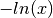

Minus Log¶
Important
This filter requires TomoPy to be available.
This filter applies the  operation to the intensity of each pixel in an image.
This uses the TomoPy implementation (tomopy.prep.normalize.minus_log)
(docs).
This is used to convert from a transmission image (i.e. high intensity indicating transmission through the sample) to attenuation images (i.e. high intensity indicating attenuation by the sample).
This filter should only be used once image normalisation has been performed.